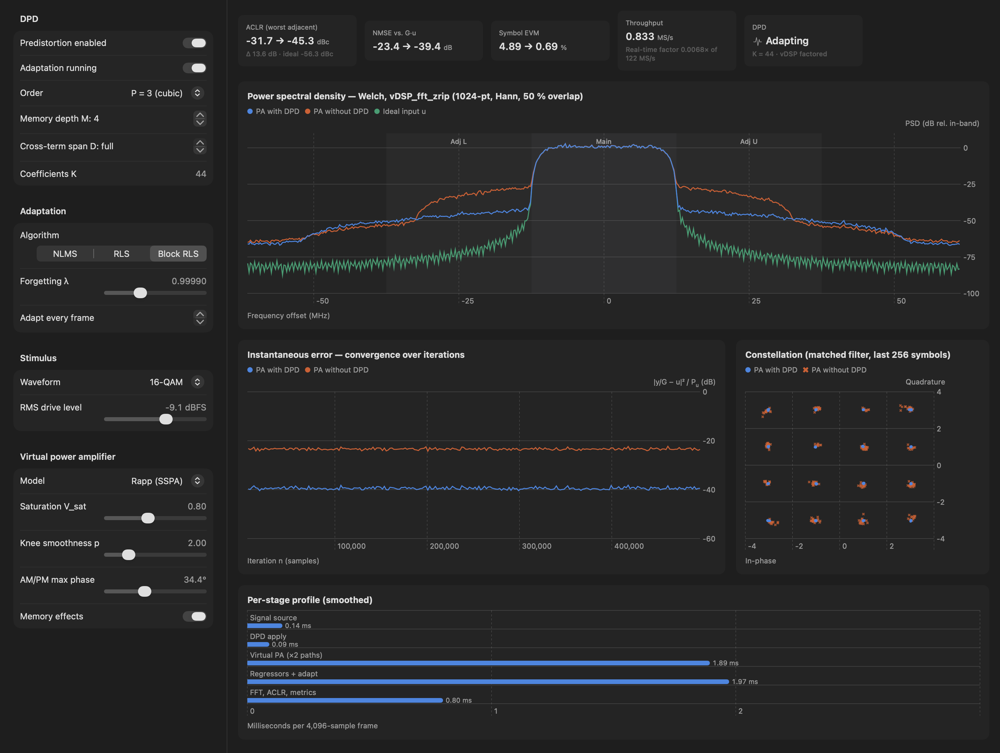
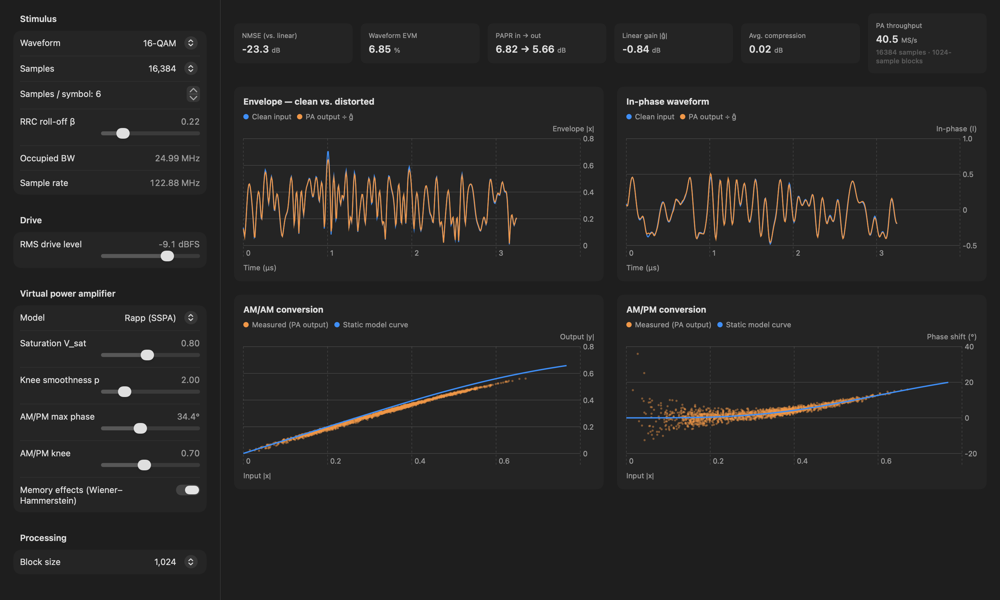
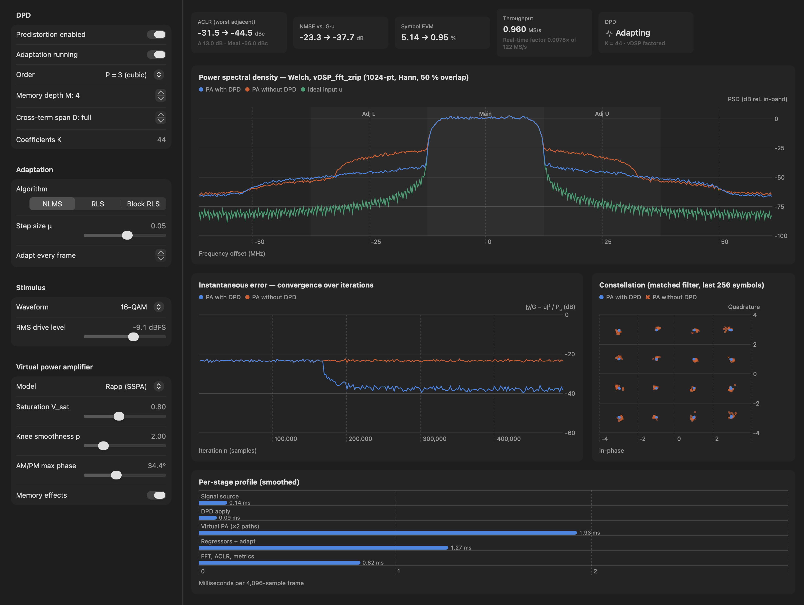
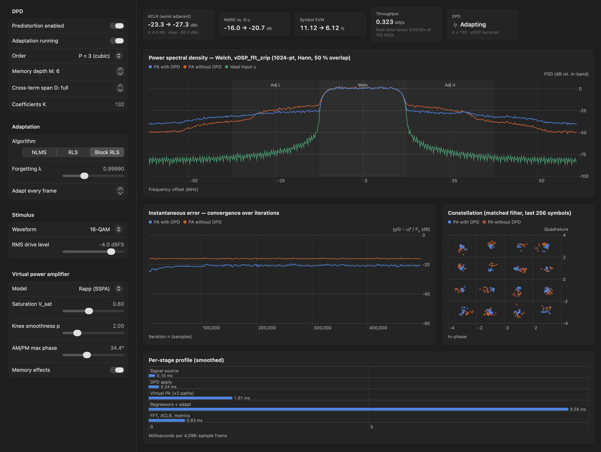
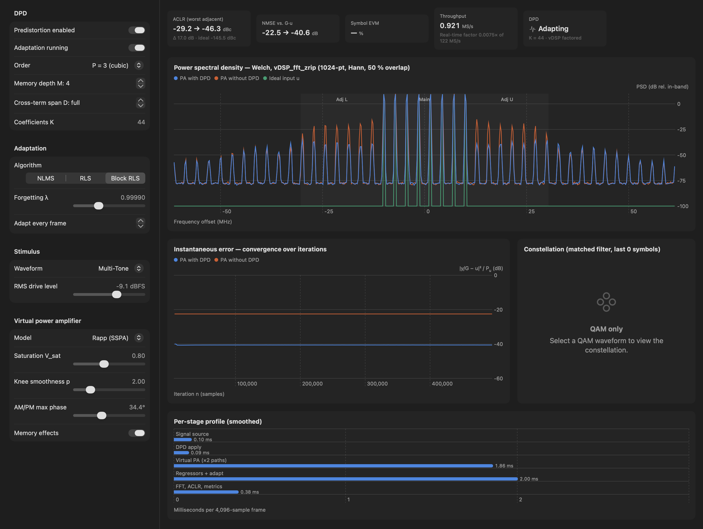
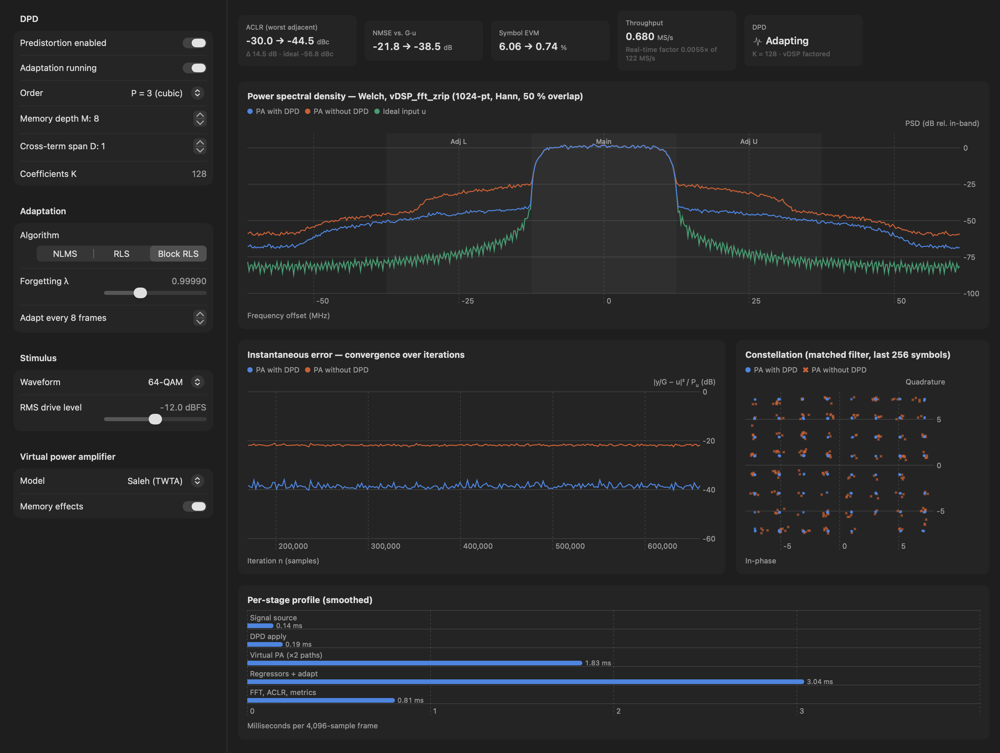
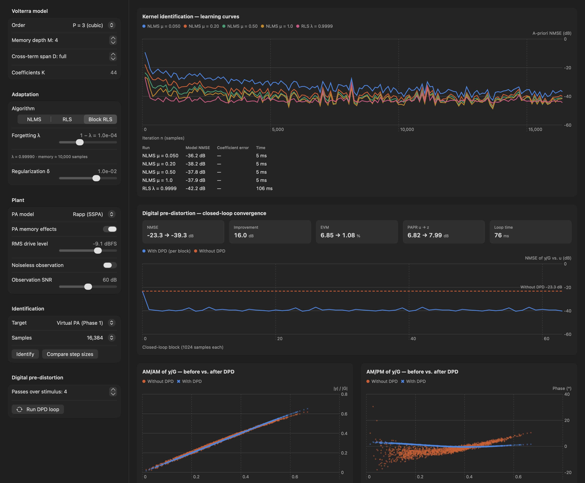
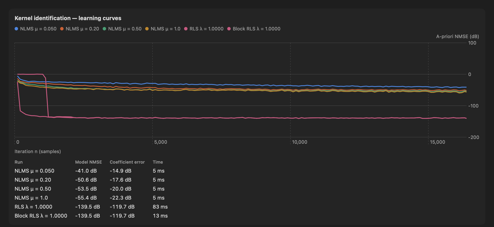
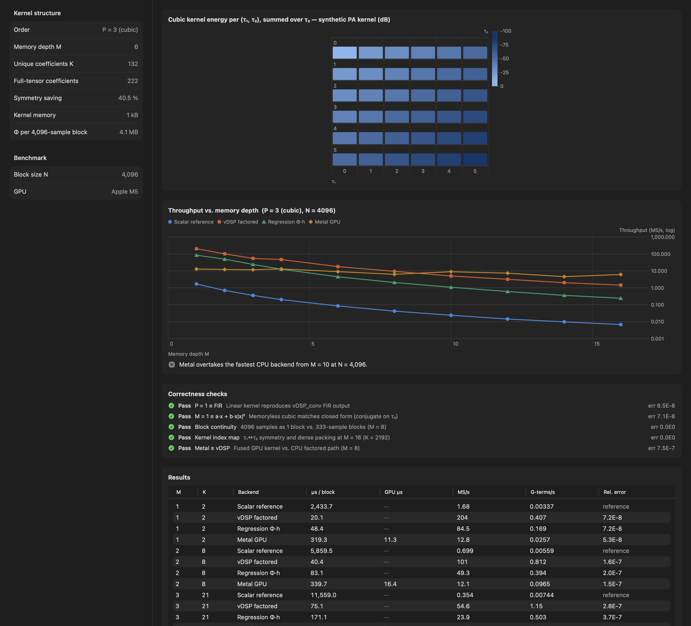

Abstract. VolterraDSPPredictor is a native macOS application that simulates the nonlinearity and memory effects of a wideband RF power amplifier (PA), models them with a truncated complex-baseband Volterra series, and linearizes the amplifier with a closed-loop adaptive digital predistorter (DPD) based on the indirect learning architecture. The whole chain runs as a streaming pipeline: stimulus synthesis, Volterra predistortion, a virtual PA, NLMS/RLS/Block-RLS identification, Welch spectrum estimation, and ACLR/NMSE/EVM measurement. It is written in Swift on Accelerate (vDSP/BLAS) and Metal, with no third-party dependencies. This document explains the research motivation and the gap the project addresses, gives the mathematical models and the implementation behind each stage, and provides a step-by-step guide to setting up the simulation and running nine reproducible experiment scenarios. On the default 16-QAM, 25 MHz scenario at 122.88 MS/s, a 44-coefficient Volterra DPD improves the worst-case ACLR from −31.7 to −45.3 dBc, NMSE from −23.4 to −39.4 dB, and symbol EVM from 4.9 % to 0.7 %.
The power amplifier is the largest consumer of energy in a radio transmitter, and its efficiency peaks near saturation, where it is also most nonlinear. Modern waveforms make the problem worse. OFDM and high-order QAM signals have peak-to-average power ratios (PAPR) of 7–12 dB and occupy tens to hundreds of megahertz. A PA driven with such a signal compresses its peaks (AM/AM conversion), rotates their phase (AM/PM conversion), and responds differently depending on the recent signal history (memory effects, caused by bias networks, matching dispersion and thermal time constants). The result is in-band error, which raises EVM and costs throughput, and spectral regrowth into adjacent channels, which is regulated through the adjacent-channel leakage ratio (ACLR) [14].
The traditional remedy is back-off: operate the PA several dB below saturation. This trades linearity for efficiency, often leaving the PA at 10–20 % efficiency. Digital predistortion takes the opposite approach. It places an inverse nonlinearity in the digital baseband so that the cascade DPD → PA is linear, which lets the PA run closer to saturation [9, 16, 21]. Because PA behaviour drifts with temperature, supply voltage, carrier frequency and ageing, the predistorter must be identified and adapted online from a feedback (observation) receiver.
VolterraDSPPredictor is a complete, inspectable laboratory for this problem. It lets a researcher or student change the PA, the stimulus, the model structure and the adaptive algorithm while the loop is running, and see the effect immediately in the spectrum, the constellation, the convergence trace and the per-stage compute profile.
At complex baseband, a memoryless PA is described by its AM/AM curve A(r) and AM/PM curve Φ(r) of the input envelope r = |x|: y = A(r)·ejΦ(r)·x/r. Two classic parametric models are used here: the Saleh model of travelling-wave-tube amplifiers [2] and the modified Rapp model of solid-state PAs [3], which has a tunable saturation knee. Memory is introduced with a Wiener–Hammerstein structure, a linear filter, then a static nonlinearity, then a second linear filter. In this structure, the response to a sample depends on several past samples, which no AM/AM–AM/PM curve can capture [15].
The Volterra series is the most general causal, time-invariant, finite-memory nonlinear model: a Taylor series with memory [1]. For a band-pass PA represented at complex baseband, only odd-order terms with one more unconjugated than conjugated factor fall back into the carrier zone. Truncated at order P = 3 and memory depth M, the model is
with τ, τ₁, τ₂, τ₃ ∈ {0, …, M−1}. Even-order kernels produce only DC and 2fc products, which the PA output network filters out. The τ₁ ↔ τ₂ symmetry of the product x(n−τ₁)x(n−τ₂) means that only τ₁ ≤ τ₂ needs to be stored, so the cubic kernel has M²(M+1)/2 coefficients instead of M³. The model is linear in its coefficients, which is what makes least-squares identification possible: stacking the regressors φ(n) into a matrix Φ gives y = Φh.
Because the coefficient count grows cubically with memory, most practical DPD work uses pruned special cases: the memory polynomial (MP) [5, 6], the generalized memory polynomial (GMP) [4], and dynamic-deviation-reduction (DDR) Volterra models [8]. Tehrani et al. [18] compared their complexity–accuracy trade-offs systematically.
The ideal predistorter is the PA's pre-inverse, which is not directly measurable. The indirect learning architecture (ILA) [7] identifies a post-inverse instead. The PA output is normalized by the target gain G, ỹ = y/G, and a Volterra filter is fitted that maps ỹ back to the PA input z. Its coefficients are then copied into the predistorter. For a Pth-order inverse, the post- and pre-inverses coincide [1], so at convergence PA(DPD(u)) ≈ G·u.
Three estimators are implemented. With a-priori error e(n) = d(n) − φT(n)h(n−1):
DPD is a mature research field, but the way it is usually studied leaves several gaps. VolterraDSPPredictor is designed to address the following five.
| Gap | Typical state of practice | How this project addresses it |
|---|---|---|
| G1 · Offline, batch-oriented studies | Most published DPD results are produced by offline scripts. A record is captured, coefficients are solved in one batch, and results are reported as static plots. The dynamics of the closed loop, such as convergence, tracking and divergence recovery, are rarely visible. | A streaming closed-loop pipeline advances frame by frame (4,096 samples). Every parameter can be changed while it runs, and the effect appears in the spectrum, error trace and constellation within a fraction of a second. Divergence is detected and recovered automatically. |
| G2 · Full Volterra treated as impractical | Because K grows as O(M³), full Volterra kernels are usually dismissed in favour of MP/GMP. Few open tools quantify the real cost of evaluating and adapting a full kernel on modern hardware. | Evaluates true multidimensional Volterra kernels (P = 3, M ≤ 16, up to K = 2,192). It exploits kernel symmetry, offers cross-term-span pruning as a continuous knob between full Volterra and a diagonal model, and measures the cost of each choice per stage. |
| G3 · Heterogeneous SoCs under-explored | DPD acceleration research targets FPGAs, ASICs or discrete GPUs. Unified-memory systems-on-chip, where CPU vector units and the GPU share one address space, are seldom evaluated, and backend choice is usually fixed at design time. | Four interchangeable backends: scalar reference, vDSP-factored, regression Φ·h, and a fused Metal compute kernel. They are cross-validated to ≈10⁻⁶, and an online, median-based backend selector picks the faster one from live timings. |
| G4 · Algorithms compared in isolation | NLMS, RLS and block least-squares results come from different papers with different PAs, stimuli and metrics, so they are hard to compare. | NLMS, RLS and Block RLS share one regressor builder, one PA and one set of metrics, with bit-reproducible seeds. A step-size sweep and an exact-recovery test (known synthetic kernel) are built in. |
| G5 · Teaching and reproducibility | Commercial toolboxes are closed and licensed. Hardware testbeds are expensive. Students rarely see the link between equations, code and spectra. | The project is open source with no dependencies. Every equation in this document maps to a named Swift function. A 66-case Swift Testing suite and a headless profiler make the results reproducible. |
Contributions. (i) A deterministic, block-continuous simulation of a wideband PA with Wiener–Hammerstein memory. (ii) A symmetric, prunable Volterra kernel layout shared by CPU, GPU and regression paths. (iii) A numerically robust Block-RLS estimator, in double precision with a Cholesky solve and ridge fallback, that matches sample-by-sample RLS to better than −90 dB while running 23× faster at K = 296. (iv) An ILA DPD loop with live ACLR, NMSE and EVM instrumentation. (v) Measured evidence of the cost/accuracy trade-offs of memory depth, pruning, adaptation rate and compute backend (Section 9).
LinearizationCore.advance()). The source drives two PA instances, one through the DPD and one uncorrected reference used to estimate G and the "without DPD" curves. The post-inverse is trained on ỹ → z, and its coefficients are copied into the predistorter after each adapting frame.The code base (≈6,200 lines of Swift and Metal) is organised into layers with strict value semantics. DSP state lives in Sendable structs, so a stream processed in blocks of any size gives exactly the same result as one long block. This is verified by the "Block continuity" self-check.
| Folder | Key types | Responsibility |
|---|---|---|
DSP/ | SignalSynthesizer, StreamingSignalSource, VirtualPowerAmplifier, FIRFilter, WelchSpectrumAnalyzer, DistortionMetrics | Stimulus synthesis, PA models, block-continuous FIR, PSD, ACLR, NMSE, EVM, PAPR |
Volterra/ | VolterraKernelLayout, VolterraKernels, VolterraFilter, VolterraCPUEngine, MetalVolterraEngine, VolterraKernel.metal, VolterraBenchmark | Kernel index map, streaming evaluation on four backends, benchmark and analytical self-checks |
Adaptive/ | AdaptiveVolterraIdentifier, RegressorRows, IdentificationExperiment, DPDLoop | NLMS/RLS/Block RLS, learning curves, offline ILA loop |
Live/ | LinearizationCore, LinearizationEngine (actor), HeadlessProfiler | Real-time frame pipeline, backend selection, os_signpost instrumentation |
Simulation/, Views/ | @Observable models, SwiftUI + Swift Charts | Four tabs: Live Dashboard, Signal & PA, Volterra Engine, Adaptive DPD |
Concurrency. All DSP runs on the LinearizationEngine actor's executor, off the main thread. The main-actor LiveDashboardModel forwards configuration edits between frames, which keeps them atomic. It paces the engine to about 20 frames/s and publishes immutable LiveSnapshot values to the UI at 10 Hz. Publishing at 20 Hz kept the main thread 44 % busy, versus 26 % at 10 Hz.
QAM. Square M-QAM symbols (16 or 64) from a seeded xoshiro256** generator are zero-stuffed by the oversampling factor sps and shaped by a unit-energy root-raised-cosine filter (roll-off β, span 32 symbols). The default is 122.88 MS/s, sps = 6 (20.48 MBd) and β = 0.22, which gives an occupied bandwidth of 24.99 MHz. Truncating the RRC filter sets the stimulus's own spectral floor: a 12-symbol span gives an ideal ACLR of −44 dBc and a 32-symbol span −56 dBc. A long span is therefore essential for the ideal reference to stay well below the DPD residual. Multi-tone. K equal tones snapped to the FFT grid, with Schroeder phases φk = πk²/K to keep the crest factor low [13], so that intermodulation products appear as clean spectral lines. The drive level is set as the RMS amplitude in dBFS. The default is 0.35, or −9.1 dBFS.
Both are evaluated as a gain g(r) = A(r)/r computed from r² without division, so zero-amplitude samples are well defined. All operations are vectorized with vDSP and vForce. The defaults are G = 1, Vsat = 0.8, p = 2, Aφ = 0.6 rad (34.4°), Bφ = 0.7 and q = 3.5, with Saleh's published TWTA constants [2]. With memory enabled, the PA is Wiener–Hammerstein, Hin(z) → NL → Hout(z), with taps [0.85, 0.22, −0.09, 0.03] and [1.0, −0.12, 0.05]. These model bias/matching dispersion and output-network or thermal low-pass behaviour.
VolterraKernelLayout maps the multidimensional coordinates to one flat vector, used identically by the regression matrix columns, the vDSP path and the Metal kernel:
[h₀] [h₁(0) … h₁(M−1)] [h₃(τ₁,τ₂;τ₃) for τ₁ ∈ 0..<M, τ₂ ∈ τ₁…min(τ₁+D, M−1), τ₃ ∈ 0..<M]
The cross-term span D keeps only pairs with |τ₁ − τ₂| ≤ D. Each kept pair keeps its full M-tap run over τ₃, so the per-pair structure that every backend relies on is preserved. Row τ₁ holds min(M−τ₁, D+1) pairs, so the coefficient count is
For D = M−1 this reduces to M + M²(M+1)/2: K = 44 at M = 4, 296 at M = 8, and 2,192 at M = 16. For D = 0 it is a diagonal "memory-polynomial-like" kernel with K = M + M², for example 72 at M = 8. Pruning trades cross-memory products for speed. It is the same principle as dynamic deviation reduction [8], but along the τ₁–τ₂ axis.
Every evaluator receives an extended block, the previous M−1 samples followed by the N new ones, so a delay τ is a pointer offset of (M−1−τ) and no shifted copies are made.
vDSP_zvmul, one vDSP_zconv and one vDSP_zvma, all on NEON vectors.vDSP_mmul products. The same Φ feeds identification.volterra_evaluate) with one thread per output sample. Each thread loads its M-sample window and its conjugate into registers, and streams the coefficients from the constant address space. That space is broadcast because every thread reads the same h. Φ is never materialized, and complex multiplies use fma.The Phase 2 tab runs five analytical self-checks: P = 1 ≡ FIR, M = 1 ≡ a·x + b·x|x|² (conjugate placement), block continuity, index-map symmetry at M = 16, and Metal ≡ vDSP. All five pass, with errors ≤ 7.5·10⁻⁷ (Figure 9).
RegressorRows.build reuses the vectorized Φ builder and transposes it with vDSP_mtrans so that each per-sample regressor is contiguous. All adaptive state is held in double precision, because single-precision RLS lost positive-definiteness of P within a few thousand updates at λ < 1.
RLS computes π = Pφ*, k = π/(λ + φTπ), h ← h + ke, P ← (P − kπH)/λ. The rank-1 update is written as two K×2 · 2×K BLAS products instead of 4K vector calls, and Hermitian symmetry is re-imposed every 256 updates.
Block RLS accumulates the exponentially weighted normal equations once per block:
ΦHΦ and ΦHd are formed from four real N-deep matrix products. The complex system is solved as the equivalent 2K×2K real symmetric positive-definite system [[Rr, −Ri], [Ri, Rr]] by a vectorized Cholesky factorization. If R is not yet positive definite, which happens in the first blocks, the solve is retried with the ridge δ raised to 10³δ and then 10⁶δ. A block whose error is non-finite or above 10⁸ marks the estimator as diverged. Block RLS reaches the same solution as RLS at block boundaries, to −90 dB in the regression test, and the predistorter is only refreshed at frame boundaries anyway.
Each frame runs these steps. (1) z = DPD(u). (2) y = PA(z), plus observation noise at the receiver SNR (70 dB live, 60 dB in Phase 3). (3) G is estimated as an exponentially weighted least-squares gain ĝ = Σy·u*/Σ|u|² on the uncorrected reference path, with forgetting 0.9. Including the AM/PM offset in G stops the DPD from trying to undo a constant phase rotation. (4) The post-inverse is adapted with regressors built from ỹ = y/G and desired signal z. (5) Its coefficients are copied into the predistorter, which keeps its own delay line. Both filters start from identity, h₁(0) = 1. The adapt every N frames option runs steps 4–5 on one frame in N. The post-inverse delay line still advances every frame so regressors stay aligned. This mirrors production DPD, where the PA drifts far more slowly than one 33 µs frame. On divergence, the core resets the DPD to identity and shows the status "Reset after divergence" for 30 frames.
PSD. WelchSpectrumAnalyzer uses 1,024-point Hann-windowed segments with 50 % overlap [12]. vDSP_fft_zrip is a real FFT, so a complex block is transformed as two real FFTs, A = FFT(xI) and B = FFT(xQ). The two-sided spectrum is reassembled from Hermitian symmetry, X[k] = A[k] + jB[k] and X[N−k] = A*[k] + jB*[k], which keeps the lower and upper sidebands distinct. The PSD is scaled so that Σ PSD·Δf equals the mean power. ACLR integrates the main channel (±BW/2) and the two adjacent channels at ±BW spacing, and the worst of the two is reported. NMSE is ‖ỹ − u‖²/‖u‖². Symbol EVM matched-filters all three paths with the RRC pulse, decimates at the symbol instants, and compares against the ideal symbols. The constellation is scaled to the odd-integer grid.
A Metal dispatch has a fixed round-trip cost of about 0.3–0.5 ms, and GPU speed depends on its clock state and on CPU contention. Neither a fixed K threshold nor a one-off calibration chose reliably. In some runs, both picked the slower path at M = 8. The core therefore times every DPD-apply call. For K ≥ 128 it alternates backends until each has six samples, discarding the first one as warm-up. It then uses the backend with the lower median of its last eight timings and re-probes the other every 32 frames. A median is used because a mean skewed by a single GPU spike kept the CPU path at M = 12, at 1.2 ms instead of 0.35 ms.
git clone https://github.com/BonnieMundia/VolterraDSPPredictor.git cd VolterraDSPPredictor open VolterraDSPPredictor.xcodeproj # older checkouts: "Untitled Project.xcodeproj"
Product ▸ Test (⌘U) runs the Swift Testing suite: 66 cases covering kernel layout, backend equivalence, block continuity, PSD scaling, exact RLS/Block-RLS recovery and NLMS convergence. Build the app before testing, because the test target has no explicit target dependency.
xcodebuild -project VolterraDSPPredictor.xcodeproj -scheme VolterraDSPPredictor \ -configuration Release -destination 'platform=macOS' -derivedDataPath /tmp/VolterraRelease build /tmp/VolterraRelease/Build/Products/Release/VolterraDSPPredictor.app/Contents/MacOS/VolterraDSPPredictor --profile 160
The --profile N flag runs 14 preset configurations for N frames each, with no UI. It treats the first quarter of the frames as warm-up and prints the mean per-stage time, throughput, real-time factor, ACLR before and after DPD, and the selected backend (Table 3). Each stage is also emitted as an os_signpost interval under Points of Interest, so a Time Profiler trace in Instruments shows Source / DPD apply / Virtual PA / Adapt / Analysis regions. Measure UI load on a standalone launch. Sessions launched from Xcode showed about 3× the main-thread load of the same build launched directly.
All engines are plain value types, so batch studies can be written as Swift Testing cases or small command-line targets without touching the UI:
var config = LiveConfiguration()
config.amplifier.model = .saleh // plant
config.signal.kind = .qam64
config.volterra = VolterraConfiguration(memoryDepth: 8, order: .third, maxPairSpan: 1)
config.adaptation.algorithm = .blockRLS
config.adaptationInterval = 8 // adapt on 1 frame in 8
var core = LinearizationCore(configuration: config, metal: MetalVolterraEngine())
var snapshot = core.advance()
for _ in 0..<160 { snapshot = core.advance() }
print(snapshot.aclrWithoutDPD.worstDBc, snapshot.aclrWithDPD.worstDBc, snapshot.nmseWithDPD)
// Offline counterparts:
let runs = IdentificationExperiment.sweep(IdentificationConfiguration(), signal: .init(), amplifier: .init())
let dpd = DPDLoop.run(signal: .init(), amplifier: .init(), dpd: DPDConfiguration())
The window has four tabs. Each tab has a control sidebar on the left and results on the right. All figures in this document are renders of the application's own views, produced from the real engines. Timings inside the screenshots come from a Debug build. Use Section 9 for Release performance.
The toolbar has Run/Pause and Reset DPD, which returns the predistorter to identity and restarts identification. Sidebar sections:
The results pane shows five tiles (ACLR, NMSE, symbol EVM, throughput with real-time factor, DPD status with K and active backend), the Welch PSD of the ideal input, the PA without DPD and the PA with DPD, with the main and adjacent channels shaded; the instantaneous error |ỹ − u|²/Pu over the last ≈ 480 k samples; a matched-filter constellation; and a per-stage time profile.
Configures the stimulus (waveform, record length 4 k–64 k samples, samples/symbol, roll-off or tone count and span), the drive level, the PA parameters (including AM/PM knee) and the processing block size. The view re-simulates automatically 60 ms after any change and shows NMSE, waveform EVM, PAPR in → out, linear gain, average compression and PA throughput. It also plots the envelope and in-phase waveforms with the gain-normalized PA output overlaid, and the AM/AM and AM/PM scatter against the static model curve. The spread of the scatter around the curve is the visible signature of memory.

Shows the kernel structure (unique coefficients, full-tensor count, symmetry saving, kernel and Φ memory), a heat map of cubic kernel energy per (τ₁, τ₂) for a synthetic PA-like kernel, and a Run benchmark button. The benchmark times every backend for M = 1…16 at the chosen block size, reports µs/block, GPU-only time, MS/s, giga-terms/s and relative error against the scalar reference, marks the GPU crossover depth, and runs the five self-checks.
Offline workbench with shared model and adaptation settings (including regularization δ), plant settings (PA, memory, drive, observation SNR or noiseless) and two experiments. Identify / Compare step sizes fit the forward PA model (target: virtual PA, or a synthetic Volterra system with known coefficients) and plot a-priori learning curves with model NMSE, coefficient error and time. Run DPD loop runs the ILA for 1–16 passes over the record and reports NMSE, EVM, PAPR of u → z, convergence per block, and before/after AM/AM and AM/PM scatter.
Each scenario lists the settings to apply, on top of the defaults in Appendix A, what to observe, and the measured result. All metrics are deterministic for the given seeds. The live values were read after 120–160 frames (≈ 0.5–0.65 M samples).
Steps. Launch the app; leave all defaults (16-QAM, −9.1 dBFS, Rapp with memory, P = 3, M = 4, K = 44, Block RLS, λ = 0.9999). Wait about 5 s. Observe. The orange (no DPD) spectrum shows shoulders at about −28 dB in both adjacent channels. The blue (DPD) curve drops them by about 14 dB. The error trace settles about 16 dB lower, and the constellation clusters tighten. Result. ACLR −31.7 → −45.3 dBc, NMSE −23.4 → −39.4 dB, symbol EVM 4.89 → 0.69 % (cover figure). The residual sits 11 dB above the ideal stimulus floor (−56.3 dBc), set by fifth- and higher-order products that a P = 3 model cannot cancel.
Steps. Select NLMS, set μ = 0.05. Turn Predistortion enabled off for a few seconds, then on again, or press Reset DPD. Observe. The blue error trace starts on the orange line and descends over about 50 k samples (≈ 12 frames) before settling around −38 dB (Figure 3). Repeat with Block RLS: the drop completes within one or two frames, because RLS-type estimators are insensitive to the eigenvalue spread of the strongly correlated, 6× oversampled regressors. Result (NLMS, μ = 0.05): ACLR −31.5 → −44.5 dBc, NMSE −23.3 → −37.7 dB, EVM 5.14 → 0.95 %, about 1.6 dB short of Block RLS in NMSE.

Steps. Set M = 1 (K = 2: one linear and one cubic coefficient, i.e. a memoryless AM/AM–AM/PM inverse). Compare with M = 4. Result. With the memory PA, M = 1 still reaches ACLR −45.3 dBc, but NMSE only −30.1 dB and EVM 2.63 %, against −39.4 dB and 0.69 % for M = 4. Interpretation. In this PA most memory sits in the linear filters around the nonlinearity. Linear dispersion distorts the signal in band but does not create out-of-band power, so ACLR barely sees it while NMSE and EVM do. Judging a DPD by ACLR alone can therefore hide a 9 dB in-band deficit, which is why all three metrics are shown side by side.
Steps. Raise the RMS drive to −4 dBFS (or lower Vsat). Set M = 6 (K = 132). Result. ACLR −23.3 → −27.3 dBc, NMSE −16.0 → −20.7 dB, EVM 11.1 → 6.1 % (Figure 4). Interpretation. DPD can only expand peaks up to the PA's saturated output. Beyond it, no input produces the required output, and the predistorter's own bandwidth expansion raises the far-out spectrum above the uncorrected PA at ±50 MHz. This scenario shows the practical operating envelope: in a real design, DPD is combined with crest-factor reduction and a few dB of back-off.

Steps. Set waveform to Multi-Tone (8 Schroeder-phased tones over 20 MHz). Observe. Each third-order product 2fi − fj appears as a discrete line on the 2.86 MHz grid, and fifth-order lines extend further out. The ideal trace has no out-of-band power at all (ideal ACLR −145 dBc), so every line is PA-generated. Result. ACLR −29.2 → −46.3 dBc; NMSE −22.5 → −40.6 dB (Figure 5). Close-in IMD3 lines fall by 15–20 dB, while the distant IMD5/7 lines change much less, which again reflects the P = 3 truncation. The constellation panel shows "QAM only" for this waveform.

Steps. PA model Saleh (TWTA); waveform 64-QAM; drive −12 dBFS; M = 8; D = 1 (K = 128 instead of 296); Adapt every 8 frames. Result. ACLR −30.0 → −44.5 dBc, NMSE −21.8 → −38.5 dB, EVM 6.06 → 0.74 % (Figure 6). On the default Rapp scenario, Table 3 shows that pruning to D = 1 or even D = 0, and adapting on one frame in eight, leave the ACLR unchanged. The oversampled stimulus makes cross products nearly collinear with diagonal terms. That will not hold for every PA or stimulus, so the default remains unpruned.

Steps (a): forward model and DPD on the virtual PA. Open the Adaptive DPD tab and keep the defaults (target Virtual PA, 16,384 samples, 60 dB observation SNR). Press Compare step sizes, then Run DPD loop. Result (Figure 7). In the forward-model fit, NLMS reaches a model NMSE of −36.2 to −38.2 dB across μ = 0.05 to 1.0, and RLS reaches −42.2 dB. A P = 3, M = 4 model cannot represent this PA exactly, so these are model-mismatch floors. The ILA loop converges within the first block and improves NMSE from −23.3 to −39.3 dB (16.0 dB) and EVM from 6.85 to 1.08 %. The predistorted signal's PAPR rises from 6.82 to 7.99 dB, because the DPD expands peaks to pre-compensate compression. After DPD, the AM/AM scatter collapses onto a straight line and the AM/PM scatter onto 0°.

Steps (b): exact recovery of a known Volterra system. Choose target Synthetic Volterra (exact), turn Noiseless observation on, and press Compare step sizes. With the tab's default stimulus (6× oversampled, β = 0.22), about 80 % of the simulated band is empty, so ΦHΦ is ill-conditioned. The ridge δ = 10⁻² then visibly biases the weakly excited coefficients: RLS shows −15.9 dB coefficient error although its output model is accurate. Exact recovery needs full-band excitation. The regression test IdentificationTests/exactRecovery uses 2 samples/symbol, β = 1, λ = 1 and δ = 10⁻⁶; run it from the Test navigator, or call IdentificationExperiment.sweep with that configuration (Section 6.5). Result (Figure 8). RLS and Block RLS both recover the coefficients to −119.7 dB (model NMSE −139.5 dB), which is the single-precision limit of the stored h. NLMS stops at −15 to −22 dB coefficient error after 16 k samples. Block RLS solves the problem in 13 ms against 83 ms for RLS. Its learning curve sits at 0 dB for the first block, because it predicts each block with the previous block's solution, which starts at zero. Lesson. This is the persistence-of-excitation trade-off in practice [10, 17]. A DPD can be accurate on the signal it sees while its individual coefficients remain poorly determined.

Steps. Volterra Engine tab → Order P = 3, block size 4,096 → Run benchmark. Result (Table 2, Figure 9). vDSP-factored is fastest up to M = 8. The Metal kernel has an almost flat cost of 0.3–0.9 ms, dominated by dispatch round trip, and wins from M = 10, reaching 4.2× the CPU at M = 16. The regression path is 2–6× slower than vDSP-factored for evaluation alone, but it is the form identification needs. All backends agree with the scalar reference to ≤ 1.8·10⁻⁶.
| M | K | vDSP factored (µs) | Regression Φ·h (µs) | Metal GPU (µs) | Best (MS/s) | Winner |
|---|---|---|---|---|---|---|
| 1 | 2 | 20 | 48 | 319 | 204 | vDSP |
| 4 | 44 | 88 | 327 | 313 | 46.8 | vDSP |
| 6 | 132 | 229 | 914 | 454 | 17.9 | vDSP |
| 8 | 296 | 437 | 1,991 | 654 | 9.4 | vDSP |
| 10 | 560 | 820 | 3,795 | 458 | 8.9 | Metal |
| 12 | 948 | 1,289 | 6,791 | 559 | 7.3 | Metal |
| 16 | 2,192 | 2,841 | 16,951 | 671 | 6.1 | Metal |
Table 2. Best-of-3 wall time per 4,096-sample block on an Apple M5, including all host-side work, measured with the in-app benchmark. The time is dominated by Accelerate and Metal, which run optimized code in every build configuration. Only the scalar reference (not shown) depends strongly on the build configuration.

Steps. Build Release and run --profile 160 (Section 6.4). Then reproduce the most interesting rows interactively by changing the algorithm, M, D and Adapt every N while watching the per-stage profile. Result. See Table 3 and Section 9.
| Configuration (Release, Apple M5, 4,096-sample frames) | K | Frame (ms) | MS/s | DPD apply (ms) | Adapt (ms) | ACLR no DPD → DPD (dBc) | Backend |
|---|---|---|---|---|---|---|---|
| NLMS, M = 4 | 44 | 0.83 | 4.92 | 0.072 | 0.44 | −31.7 → −44.9 | vDSP |
| RLS, M = 4 | 44 | 25.8 | 0.16 | 0.069 | 25.4 | −31.7 → −45.6 | vDSP |
| Block RLS, M = 4 | 44 | 1.08 | 3.78 | 0.067 | 0.68 | −31.7 → −45.6 | vDSP |
| Block RLS, M = 4, adapt 1/8 | 44 | 0.48 | 8.48 | 0.067 | 0.086 | −31.7 → −45.6 | vDSP |
| RLS, M = 8 | 296 | 348.7 | 0.01 | 0.43 | 348.0 | −31.7 → −45.2 | vDSP |
| Block RLS, M = 8 | 296 | 15.3 | 0.27 | 0.41 | 14.6 | −31.7 → −45.6 | vDSP |
| Block RLS, M = 8, adapt 1/8 | 296 | 2.56 | 1.60 | 0.40 | 1.83 | −31.7 → −45.6 | vDSP |
| Block RLS, M = 8, D = 1, adapt 1/8 | 128 | 1.03 | 4.00 | 0.19 | 0.51 | −31.7 → −45.6 | vDSP |
| Block RLS, M = 8, D = 0, adapt 1/8 | 72 | 0.58 | 7.03 | 0.097 | 0.16 | −31.7 → −45.6 | vDSP |
| Frozen DPD, M = 12 (apply only) | 948 | 0.73 | 5.61 | 0.40 | — | — | Metal |
| Frozen DPD, M = 16 (apply only) | 2,192 | 0.89 | 4.59 | 0.56 | — | — | Metal |
Table 3. Output of --profile 160 (mean of raw per-frame times after 40 warm-up frames). The remaining stages are constant: source ≈ 0.034 ms, two PA paths ≈ 0.105 ms, analysis ≈ 0.19 ms.
Findings. (1) Block RLS is the right default. It is 24× faster than RLS at K = 44 and 23× faster at K = 296, with identical ACLR. (2) Sample-by-sample RLS scales as O(K²) per sample and misses a 50 ms frame budget above K ≈ 60, which is why the UI warns at that point. (3) Adapting on 1 frame in 8 cuts the M = 8 frame from 15.3 to 2.6 ms with no ACLR loss. (4) Pruning to D = 0 reduces K from 296 to 72 and the frame to 0.58 ms, 26× faster than full-rate, full-kernel Block RLS, at the same ACLR on this PA. (5) The online selector correctly moves DPD-apply to Metal at M ≥ 12 and keeps vDSP below. (6) The best full closed-loop throughput is about 8.5 MS/s, a real-time factor of 0.07 at 122.88 MS/s. Applying the frozen predistorter is cheaper than everything else in the frame (the PA paths and analysis exist only in simulation), so in a deployed system the per-sample cost is the DPD-apply column: 0.067 ms per 4,096 samples, or about 61 MS/s on one CPU core for K = 44.
What the results show. A third-order Volterra DPD with modest memory (K = 44) recovers about 14 dB of ACLR and 16 dB of NMSE on a realistic memory PA. The full kernel is affordable on a laptop-class SoC when it is adapted as a block least-squares problem, adapted sparsely in time, and evaluated in factored form. The choice between CPU vector units and the GPU is workload-dependent and is best made online.
Limitations.
Future work. (1) Fifth-order kernels and GMP/DDR baselines for side-by-side comparison [4, 8]. (2) Orthogonal polynomial bases or QR-RLS to improve conditioning with oversampled stimuli [17]. (3) A hardware-in-the-loop path, for example RFWebLab measurements or an SDR transmitter with an observation receiver. (4) Direct learning and neural-network DPD running on the Neural Engine. (5) Batched Metal adaptation for very large K. (6) Crest-factor reduction ahead of the DPD to explore the S4 operating envelope.
[1] M. Schetzen, The Volterra and Wiener Theories of Nonlinear Systems. New York: Wiley, 1980.
[2] A. A. M. Saleh, "Frequency-independent and frequency-dependent nonlinear models of TWT amplifiers," IEEE Trans. Commun., vol. 29, no. 11, pp. 1715–1720, Nov. 1981.
[3] C. Rapp, "Effects of HPA-nonlinearity on a 4-DPSK/OFDM-signal for a digital sound broadcasting system," in Proc. 2nd European Conf. Satellite Communications, Liège, 1991, pp. 179–184.
[4] D. R. Morgan, Z. Ma, J. Kim, M. G. Zierdt, and J. Pastalan, "A generalized memory polynomial model for digital predistortion of RF power amplifiers," IEEE Trans. Signal Process., vol. 54, no. 10, pp. 3852–3860, Oct. 2006.
[5] J. Kim and K. Konstantinou, "Digital predistortion of wideband signals based on power amplifier model with memory," Electron. Lett., vol. 37, no. 23, pp. 1417–1418, Nov. 2001.
[6] L. Ding, G. T. Zhou, D. R. Morgan, Z. Ma, J. S. Kenney, J. Kim, and C. R. Giardina, "A robust digital baseband predistorter constructed using memory polynomials," IEEE Trans. Commun., vol. 52, no. 1, pp. 159–165, Jan. 2004.
[7] C. Eun and E. J. Powers, "A new Volterra predistorter based on the indirect learning architecture," IEEE Trans. Signal Process., vol. 45, no. 1, pp. 223–227, Jan. 1997.
[8] A. Zhu, J. C. Pedro, and T. J. Brazil, "Dynamic deviation reduction-based Volterra behavioral modeling of RF power amplifiers," IEEE Trans. Microw. Theory Techn., vol. 54, no. 12, pp. 4323–4332, Dec. 2006.
[9] F. M. Ghannouchi and O. Hammi, "Behavioral modeling and predistortion," IEEE Microw. Mag., vol. 10, no. 7, pp. 52–64, Dec. 2009.
[10] S. Haykin, Adaptive Filter Theory, 5th ed. Upper Saddle River, NJ: Pearson, 2014.
[11] A. H. Sayed, Fundamentals of Adaptive Filtering. Hoboken, NJ: Wiley-IEEE Press, 2003.
[12] P. D. Welch, "The use of fast Fourier transform for the estimation of power spectra: A method based on time averaging over short, modified periodograms," IEEE Trans. Audio Electroacoust., vol. 15, no. 2, pp. 70–73, Jun. 1967.
[13] M. R. Schroeder, "Synthesis of low-peak-factor signals and binary sequences with low autocorrelation," IEEE Trans. Inf. Theory, vol. 16, no. 1, pp. 85–89, Jan. 1970.
[14] 3GPP TS 38.104, "NR; Base Station (BS) radio transmission and reception," 3rd Generation Partnership Project, Technical Specification (ACLR requirements, clause 6.6.3).
[15] J. C. Pedro and S. A. Maas, "A comparative overview of microwave and wireless power-amplifier behavioral modeling approaches," IEEE Trans. Microw. Theory Techn., vol. 53, no. 4, pp. 1150–1163, Apr. 2005.
[16] S. C. Cripps, RF Power Amplifiers for Wireless Communications, 2nd ed. Norwood, MA: Artech House, 2006.
[17] R. Raich, H. Qian, and G. T. Zhou, "Orthogonal polynomials for power amplifier modeling and predistorter design," IEEE Trans. Veh. Technol., vol. 53, no. 5, pp. 1468–1479, Sep. 2004.
[18] A. S. Tehrani, H. Cao, S. Afsardoost, T. Eriksson, M. Isaksson, and C. Fager, "A comparative analysis of the complexity/accuracy tradeoff in power amplifier behavioral models," IEEE Trans. Microw. Theory Techn., vol. 58, no. 6, pp. 1510–1520, Jun. 2010.
[19] Apple Inc., "Accelerate — vDSP," Apple Developer Documentation, developer.apple.com/documentation/accelerate/vdsp.
[20] Apple Inc., "Metal Shading Language Specification," developer.apple.com/metal.
[21] L. Guan and A. Zhu, "Green communications: Digital predistortion for wideband RF power amplifiers," IEEE Microw. Mag., vol. 15, no. 7, pp. 84–99, Nov.–Dec. 2014.
| Group | Parameter | Default | Range in UI | Source |
|---|---|---|---|---|
| Stimulus | Sample rate | 122.88 MS/s | fixed | SignalConfiguration |
| Waveform / samples per symbol / roll-off | 16-QAM / 6 / 0.22 | MT, 16-, 64-QAM / 2–16 / 0.05–1 | ||
| RRC span | 32 symbols | — | ||
| Tones / span (multi-tone) | 8 / 20 MHz | 2–64 / 1–60 MHz | ||
| RMS drive | 0.35 (−9.1 dBFS) | −30…0 dBFS (live −24…0) | ||
| PA | Model | Rapp | Rapp, Saleh | PAConfiguration |
| Rapp G / Vsat / p | 1.0 / 0.8 / 2.0 | — / 0.2–1.5 / 0.5–8 | ||
| AM/PM Aφ / Bφ / q | 34.4° / 0.7 / 3.5 | 0–90° / 0.1–1.5 / — | ||
| Memory Hin, Hout | [0.85 0.22 −0.09 0.03], [1 −0.12 0.05] | on/off | ||
| Volterra | Order P / memory M / span D | 3 / 4 / full | 1, 3 / 1–16 / 0…M−1 | VolterraConfiguration |
| Constant term h₀ | off | Phase 2 only | ||
| Adaptation | Algorithm (live, Phase 3 DPD) | Block RLS | NLMS, RLS, Block RLS | AdaptationParameters |
| λ / δ (live and DPD) | 0.9999 / 10⁻² | 1−λ: 10⁻⁵…10⁻² / δ: 10⁻⁶…1 | ||
| NLMS μ / ε | 0.25 / 10⁻⁶ | 10⁻³…1.5 | ||
| Live loop | Frame size / adapt every | 4,096 / 1 | — / 1–32 | LiveConfiguration |
| Feedback SNR | 70 dB | — | ||
| Engine / UI rate | ≈ 20 Hz / 10 Hz | — | ||
| Phase 3 | Record / block / passes | 16,384 / 1,024 / 4 | 4 k–64 k / — / 1–16 | Phase3Model |
| Observation SNR | 60 dB | 20–100 dB or noiseless |